Dynamics of Crises in Turkey
Contents
Introduction
This page presents charts depicting the dynamics of economic crises in Turkey. The period since 2000 is covered, and there are three crises observed in that period: 2001, 2009, and 2019. We use quarterly time series for national accounts (chain linked volume series), and the “growth rates” refer to logarithmic year-on-year growth rates (logarithmic growth rates compared with the corresponding quarter of the previous year). The data were downloaded from the CBRT’s web site by using the CBRT package.
[Updated on July 16, 2020]
Periodization
GDP growth rates
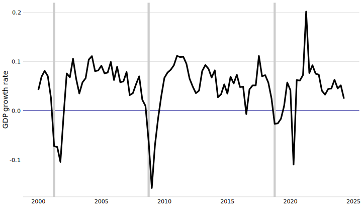
Periodization:
The “period” variable is set to 1 at
- 2001:Q2
- 2008:Q4
- 2018:Q4
GDP growth rates over the cycles
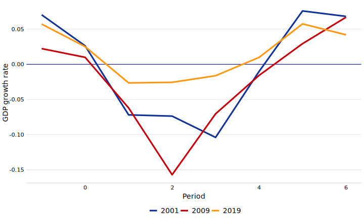
GDP components - production
GDP components, 2018
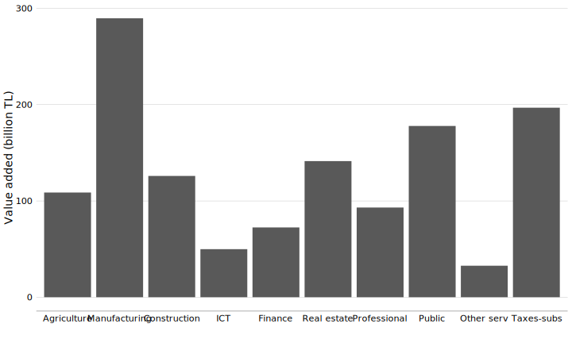
Agriculture
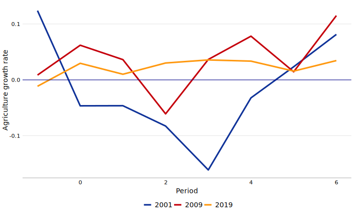
Manufacturing
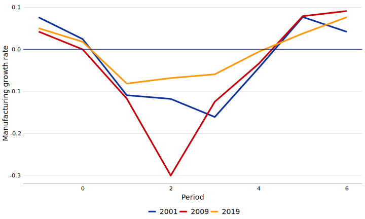
Construction
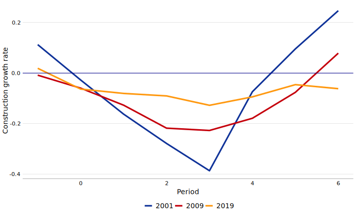
Information and communication
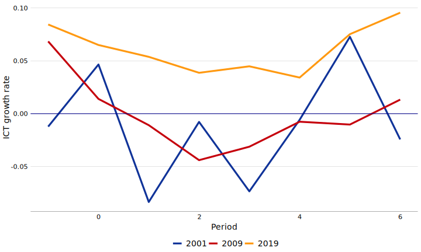
Finance
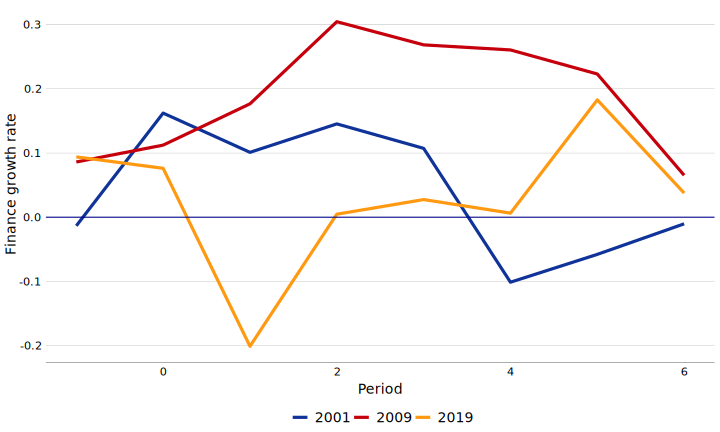
Real estate
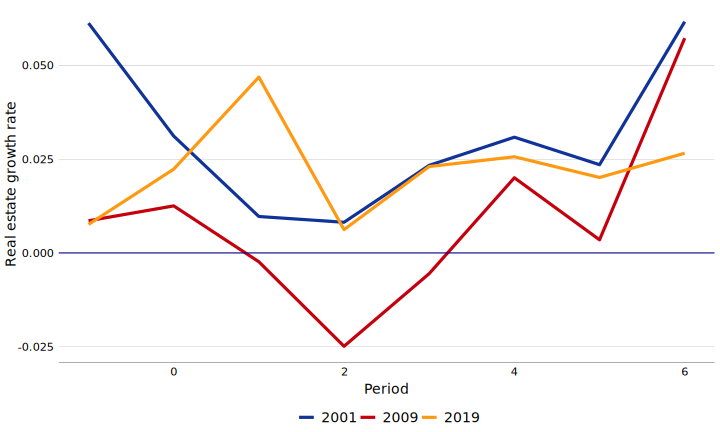
Professional services
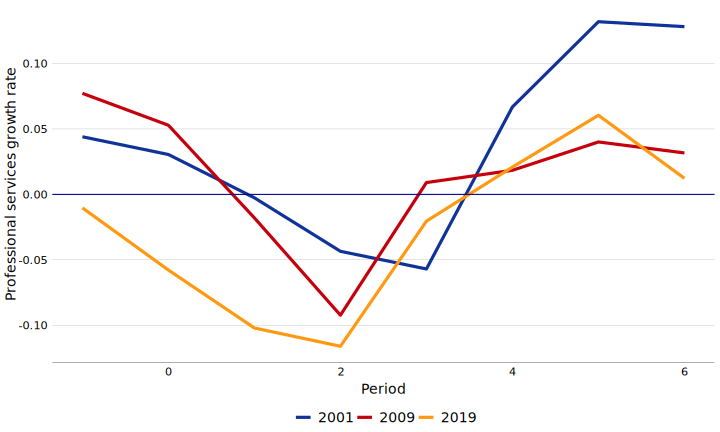
Public services
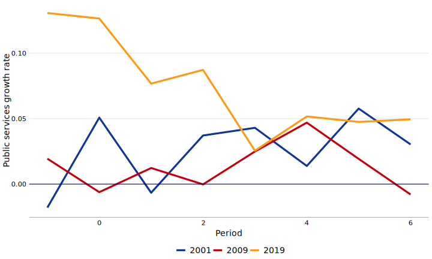
Taxes - subsidies
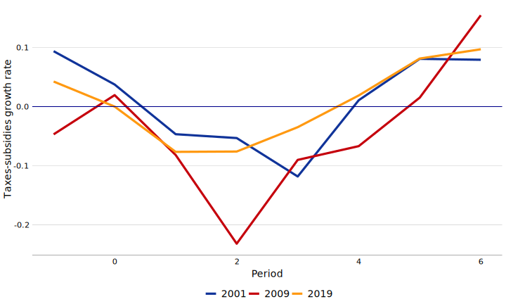
GDP components - expenditures
GDP components, 2018
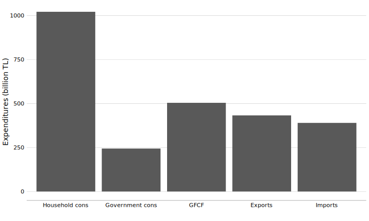
Household consumption
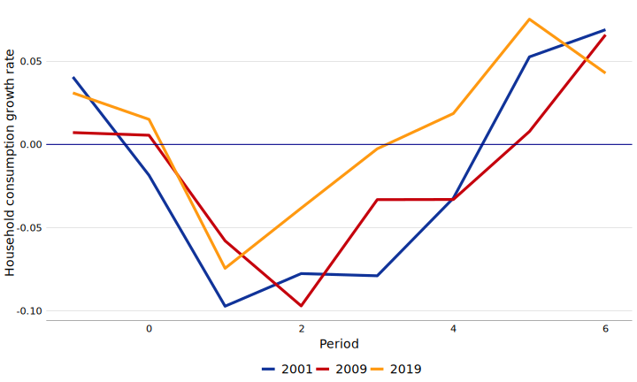
Government consumption

Gross fixed capital formation
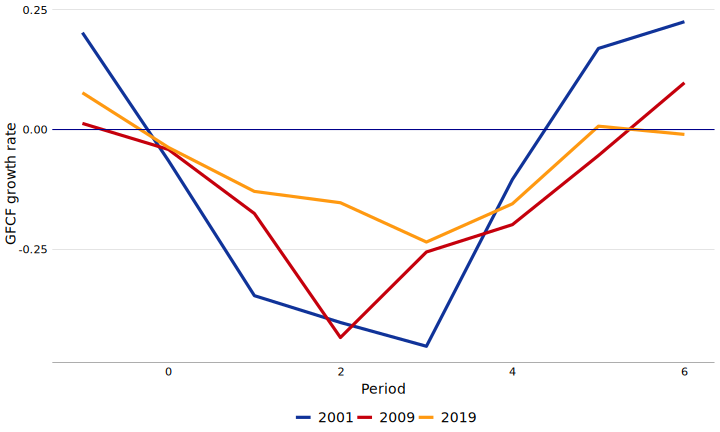
Exports
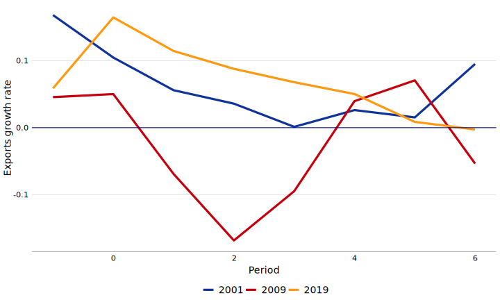
Imports
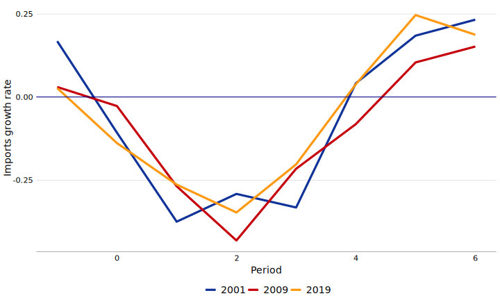
Employment
Unemployment rate
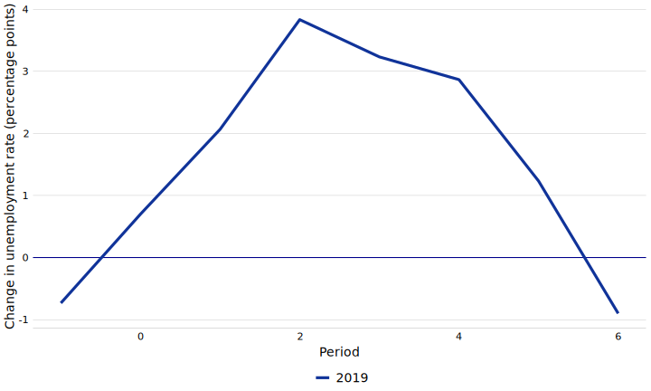
Employment rate

Labor force participation rate
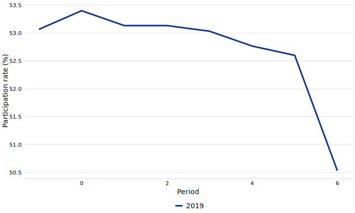